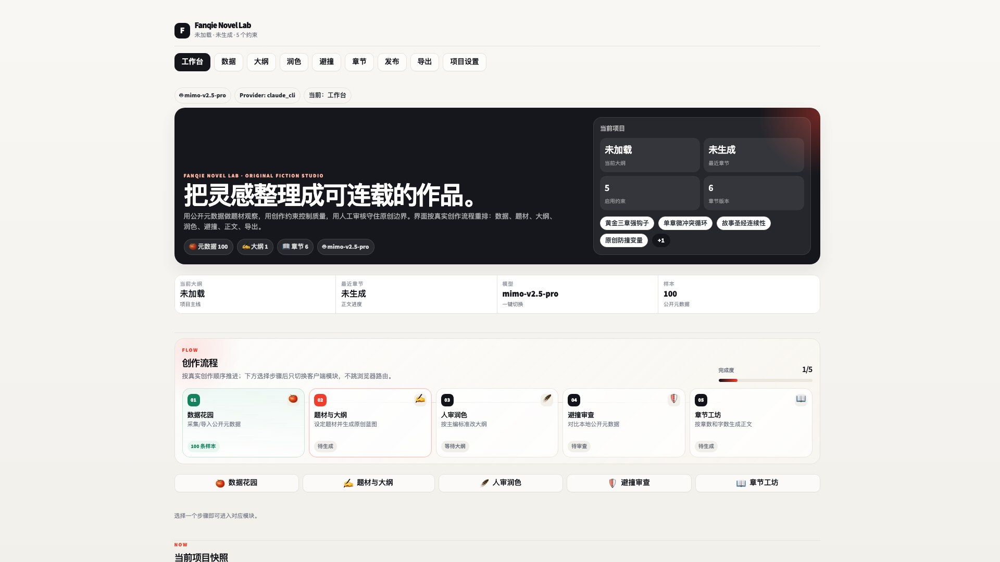

Desktop · Open Source · Multi Model
本地 AI 小说创作工作台
从公开元数据观察、题材 Brief、大纲生成、人工润色、原创避撞，到章节正文、章节审核和发布包管理，都收进一个桌面客户端。
本地运行，作品、模型配置和数据库留在你的电脑；支持多模型与桌面端工作流。
本地运行作品数据留在本机
Win / macOS桌面客户端脚本
MIT开源许可
产品预览
完整创作流程，一屏预览
在一个预览框内浏览核心工作区，展示从数据到发布的完整链路。

工作台从题材、样本、大纲、正文到交付，按创作流程推进。
Workflow
按流程组织，每一步都可回看
大纲、正文、审核、模型和发布材料围绕同一个项目档案展开。
🍅
公开元数据观察维护本地样本库，用于题材趋势、关键词和避撞对比，不把正文采集进来。
✍️
大纲生成与润色设置题材、读者、钩子、禁忌和平台节奏，生成后先人工审核再进入正文。
📖
分章正文工坊可以选择生成多少章、目标字数、后续编辑和 AI 润色，不强制一次生成全部。
🛡️
原创避撞审查对照本地元数据和大纲结构，检查相似关键词、设定和高风险卖点。
✅
章节对纲审核生成后逐章检查是否跑题、是否兑现冲突、结尾钩子是否足够。
🤖
多模型配置支持 OpenAI-compatible 中转站、本地 Ollama / LM Studio、Claude CLI 等配置方式。
Install
下载后本地启动
下载 v0.2.0，配置模型后即可在本机开始创作。
1
安装基础环境安装 Python 3.10+；桌面客户端需要 Node.js LTS。
2
运行安装脚本Windows 使用 scripts\setup.ps1；macOS 使用 bash scripts/setup.sh。
3
配置模型并创作在“项目设置 → 模型”选择中转站、本地模型或 Claude CLI。